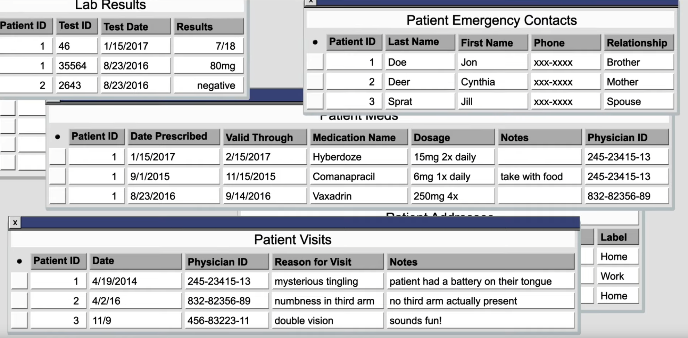

Basic Concepts
-
 .
Primary Key
-
All tables need a key. The key is often used to order the sorting of the table in physical media, to help optimize queries. For this reason, the key needs to be unique, but as small as possible. You can think of the key as the key in a map or dictionary.
-
Because of the uniqueness rule, every table has an implicit key because the table can use the combination of all the columns at once to identify each row uniquely. That is, the key, or the unique lookup, which is the primary key for a table, can be defined as the totality of the whole row. If the row is unique, then the primary key is unique. Normally, we try to avoid using the whole row as the primary key, but sometimes, it's actually our only choice.
-
As a bit of an aside, the idea that a row in a database is also the key can be a core concept worth spending time thinking about. It is as if a database table is a very sparse set from an extremely large domain of possible values. This can be useful because you may notice that under some circumstances, the set of possible values isn't very large, and your table can be more easily defined as a bit set.
-
The column that seems more likely to be unique will also be the column you can use as the primary key .